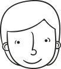

Avistaje de aves
como nunca viste.
¡Les damos la bienvenida a nuestra empresa de turismo de avistaje de aves en Argentina!
¿Qué hacemos?
Argentina es el hogar de más de 1000 especies de aves, muchas endémicas de la región.
Nuestros tours
están
diseñados para: realizar excursiones a través de los paisajes más impresionantes de Argentina; avistar aves en
su hábitat natural; estar guiados por guías profesionales y multilingües; alquiler de equipos (binoculares,
cámaras, ropa); registro fotográfico y audiovisual de la salida. Para lograr este viaje que no olvidarás, te
ofrecemos la posibilidad de llevarte ida y vuelta hasta cada destino, el acompañamiento de guías expertas
multilingües, y un equipo profesional que podrá asesorarte con todas tus necesidades y deseos, siempre en
consonancia con el ecoturismo, el respeto por la naturaleza, y la biodiversidad.
Destinos

Esteros del Iberá, Corrientes
Ofrece una de las mayores concentraciones de fauna de Argentina y una gran variedad de aves, incluyendo el aguará guazú, la yacutinga, el loro hablador, el hornero, el jacana y el cardenal amarillo.

Reserva Natural Río Ñambiquara, Salta
En esta reserva se protege el bosque y la selva subtropical de las yungas. En él habitan aves endémicas como el yal corta corriente, el águila solitaria, el tucán grande y el cardenal amarillo.

Parque Nacional Los Glaciares, Santa Cruz
Además de sus conocidos glaciares, este destino ofrece una gran variedad de aves como el cóndor andino, el águila mora, el carancho, el flamenco andino y el pato crestón.
Península Valdés, Chubut
Uno de los mejores destinos para la observación de aves marinas en nuestro país: con especies como el pingüino de Magallanes, el cormorán imperial, el petrel gigante, el albatros errante y el petrel de Wilson.
Completá el formulario para estar mas cerca de tu próximo viaje
¿Quiénes Somos?
-

Carlos
Fundador
Carlos es un programador apasionado por la observación de aves. Desde joven ha sido un amante de la naturaleza y ha pasado muchos años explorando diferentes lugares para encontrar nuevas especies de aves. Después de trabajar por varios años como programador, combinó sus habilidades técnicas con su pasión por la observación de aves y fundó esta empresa de turismo especializada en viajes para la observación de aves. Es el responsable de haber unido a este grupo de profesionales interdisciplinario para ofrecerte la más integral de las experiencias de ecoturismo.

Carolina
Diseñadora
Caro es una diseñadora de imagen y fotógrafa apasionada por la observación de aves. Desde joven ha estado interesada en la fotografía de naturaleza y ha combinado su amor por las aves con su experiencia en diseño de imagen. Unió su pasión por la fotografía de aves y su experiencia en diseño en nuestra empresa, utilizando sus habilidades en diseño para crear campañas publicitarias y promocionar el emprendimiento. También ha colaborado en la creación de guías de identificación de aves para los clientes de la empresa. Con su experiencia en fotografía y diseño de imagen, Caro ha ayudado a promover la observación de aves como una actividad única y emocionante.
Irene
Guía Turística
Irene es una apasionada de los idiomas y la comunicación. Desde joven, ha estudiado varios idiomas y ha viajado por todo el mundo para sumergirse en diferentes culturas y formas de vida. Como guía turística, Irene no sólo es capaz de mostrar a los turistas algunos de los lugares más increíbles para observar aves, sino que también es capaz de comunicarse con ellos en varios idiomas y ayudarlos a comprender la cultura y las costumbres locales. Irene es una experta en la comunicación intercultural y cree firmemente que la observación de aves es una forma de unir a las personas de diferentes culturas y lenguas en un mismo objetivo: apreciar proteger la belleza natural del mundo.

Marisa
Guía Turística
Marisa es una apasionada del mar y los chocolates, y también una entusiasta observadora de aves. Desde muy joven, se ha sentido atraída por la naturaleza y la vida marina, y ha pasado muchos veranos explorando las playas y observando las aves. Después de varios años siguió su pasión por la naturaleza y se unió a nuestra empresa como guía turística. Marisa ha llevado a los turistas a algunos de los lugares más increíbles para observar aves y disfrutar de la belleza natural de la costa. También se encarga de la organización de los viajes y de la atención personalizada a los clientes. Cree firmemente que la observación de aves es una forma de conectar con la naturaleza y contribuir a su conservación, parte del alma de nuestro emprendimiento.

Mara
Organización
Mara es una bibliotecóloga y escritora que siempre ha sentido una gran pasión por los libros y la naturaleza. Desde joven ha disfrutado de la lectura y la escritura, pero también ha encontrado en la observación de aves una forma de conectar con la naturaleza y disfrutar del mundo exterior. Se unió a la empresa, donde su habilidad para organizar y clasificar la información se ha convertido en una gran herramienta para mantener registros detallados de los avistamientos de aves y los viajes de los turistas. Es la responsable de llevar a cabo un registro detallado de cada viaje y avistamiento de aves, y utiliza sus habilidades de bibliotecóloga para clasificar y organizar la información, para hacerla fácilmente accesible para la empresa y los turistas.

Fernando
Comunicación
Fernando trabaja en comunicación y prensa en distintas instituciones y como documentalista independiente sobre temas de historia, ciencia y cultura. Durante el proceso de realización de uno de sus trabajos audiovisuales conoció el apasionante mundo de la observación de aves, un tema que le permitió conocer gente y lugares de lo más diversos. Como parte de la empresa se ocupa de compartir la agenda de actividades, la variedad de nuestras propuestas y las novedades sobre avistaje de aves y ecoturismo.